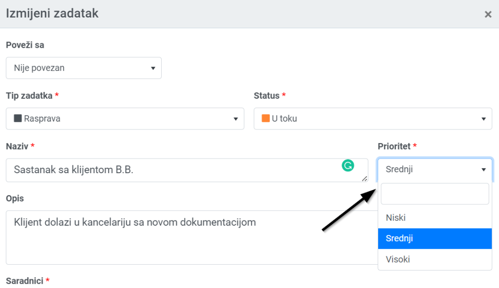
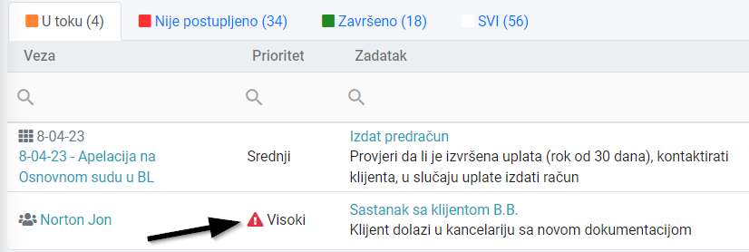
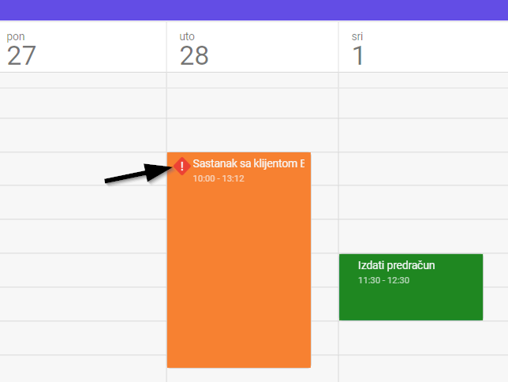

Svakom zadatku možete dodijeliti 3 nivoa važnosti: Niski, Srednji i Visoki:

Pri prvom unosu zadatka, postavljen je Srednji prioritet. Ako ga promijenite na Visoki, unutar liste zadataka on će biti označen kao na slici:

Unutar liste u modulu Zadaci, zadatke možete filtrirati i po prioritetu. Takođe, u modulu Kalendar, zadaci sa označenim visokim prioritetom su posebno naglašeni:
